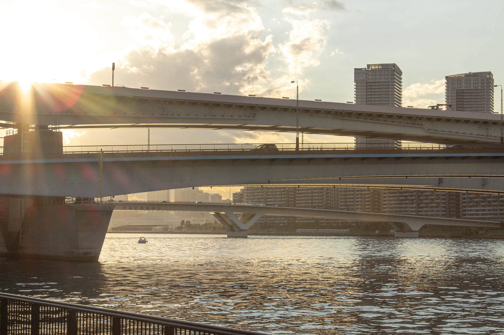
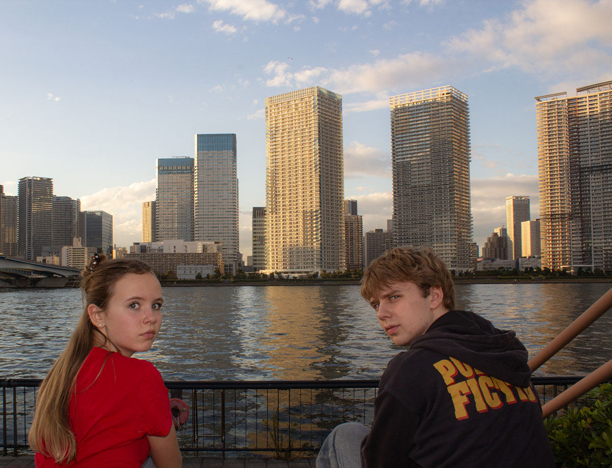

Mitt cv
.png)

Hej! Jag heter Teodor Boestad, jag har älskat att programmera sedan mellanstadiet. Sen dess har jag gjort många
olika projekt och byggt egenskaper i många
 olika språk. Jag släppte mitt spel "Hooked on Speed" på steam for något år sedan och har sedan i september arbetat
på mitt nya spel "Under exposed". Förutom det så har jag varit scout i 11 år, under den tiden så var jag på många
läger inklusive World
Scout jamboree i Sydkorea.
olika språk. Jag släppte mitt spel "Hooked on Speed" på steam for något år sedan och har sedan i september arbetat
på mitt nya spel "Under exposed". Förutom det så har jag varit scout i 11 år, under den tiden så var jag på många
läger inklusive World
Scout jamboree i Sydkorea.

Men jag gick också en ledar utbilnding där man lärde som hur man planerar och organiserar aktiveteter och läger för stora grupper. Nu mera går jag på en teknik skola vid namn "NTI Johanneberg" där jag lär mig mycket om olika programmerings typer, som bland annat arduino c, html, js, css och ruby.Jag har som sagt gillat att programmera hela mitt liv, men det som starkast hållit mitt intresse är spelprogrammering. När jag växte upp och började lära mig programmering så gick jag en online utbildning som hette "unga programmerare", där fick man lära sig om grundläggande python och pygame.
 När jag var färdig med den så ville jag lära mig en spelmotor och fastade för Game maker studio 2, vilket jag höll på med i något år och gjorde olika små mini mobil spel. Sen så bytte jag till unity ett tag men för två år sedan började jag lära mig Godot vilket jag har använt sedan dess.
När jag var färdig med den så ville jag lära mig en spelmotor och fastade för Game maker studio 2, vilket jag höll på med i något år och gjorde olika små mini mobil spel. Sen så bytte jag till unity ett tag men för två år sedan började jag lära mig Godot vilket jag har använt sedan dess.
 Ett av mina första projekt var hooked on speed vilket jag vann min skolas programmerings tävling med. Spelet är ett speedrunning spel där man ska klara olika nivåer på så kort tid som möjligt. Nu på den senaste tiden så har jag jobbat på ett fotografi spel som jag har kallat för "Under Exposed". Jag har arbetat på det i snart ett halvt år och satsar på att bli klar inom något månad eller två.
Ett av mina första projekt var hooked on speed vilket jag vann min skolas programmerings tävling med. Spelet är ett speedrunning spel där man ska klara olika nivåer på så kort tid som möjligt. Nu på den senaste tiden så har jag jobbat på ett fotografi spel som jag har kallat för "Under Exposed". Jag har arbetat på det i snart ett halvt år och satsar på att bli klar inom något månad eller två.